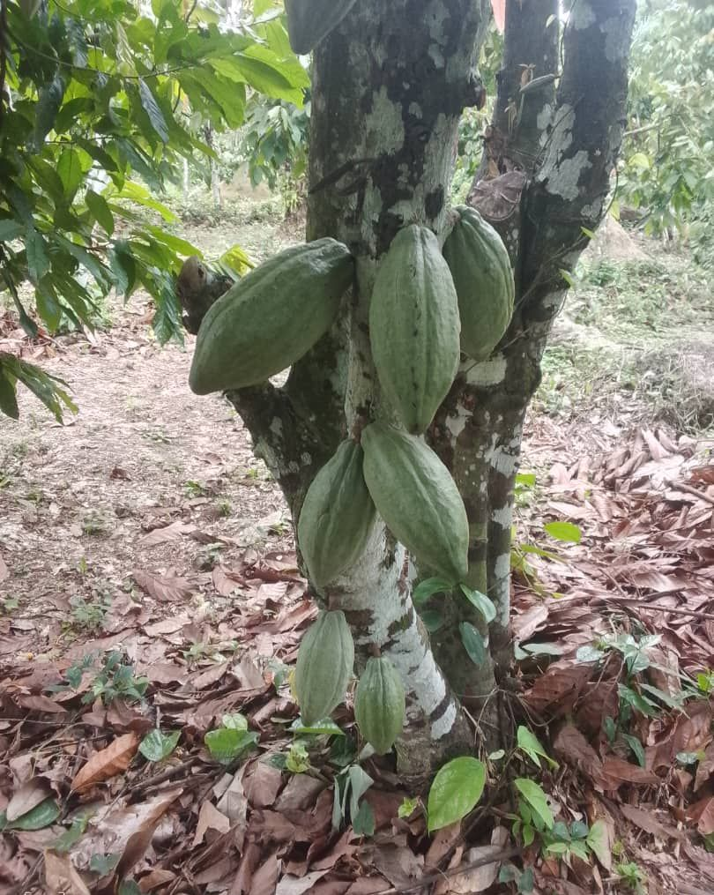

Cacao fermenté sous feuilles, séché au soleil.
Cabosses ouvertes le jour de la récolte, fèves fermentées en caisses de bois puis séchées sur claies. Pour chocolatiers et transformateurs qui veulent une origine unique.
La fiche.
Chaque ligne porte son statut. Les crochets ne sont pas des oublis, ce sont les questions à poser à l'exploitation.
OrigineIbenga · Likouala
Récolte[ mois ] à confirmer
Variété[ à fournir ]
FermentationEn caisses, sous feuilles de bananier
Durée de fermentation[ jours ] à fournir
SéchageSur claies, au soleil
Humidité finale[ % ] à fournir
Conditionnements[ à fournir ] sacs
De l'arbre à vous.
Trois moments. Les photographies réelles de chaque étape sont à faire sur place.

I
La cabosse
Cueillie mûre, ouverte le jour même. La pulpe blanche entoure les fèves.

II
La fermentation
Les fèves passent en caisses de bois, couvertes de feuilles de bananier. C'est là que naît l'arôme.

III
Le séchage
Sur claies, retourné plusieurs fois par jour, jusqu'à l'humidité voulue. Puis ensaché.
Formes et conditionnements.
- Sac[ poids à fournir ]
- Lot minimum[ à fournir ]
- Échantillon[ poids ] sur demande
- Fiche d'analyseÀ produire par l'exploitation
Pour qui
ChocolatiersTransformateursTorréfacteursNégociants d'origine

Les claies de séchage, sous les palmiers

Cabosses sur le tronc · avril 2025